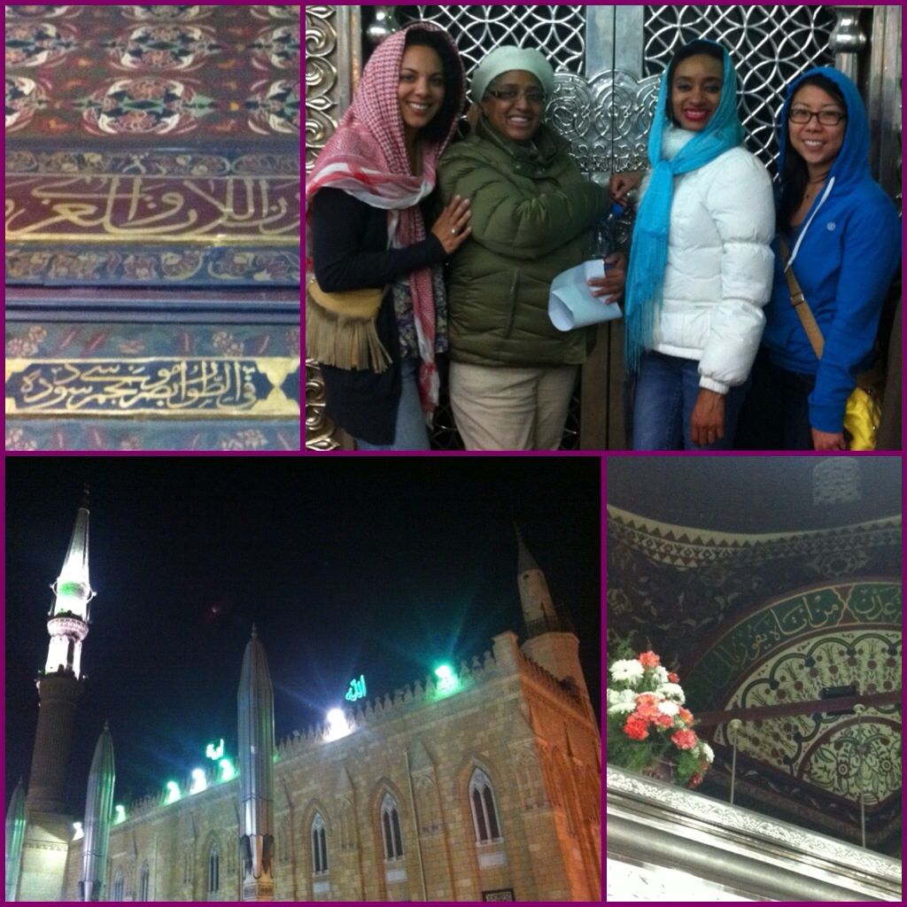
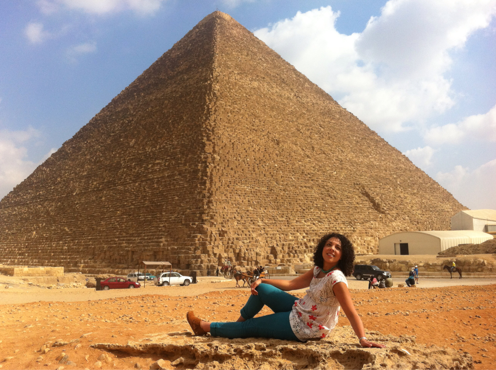
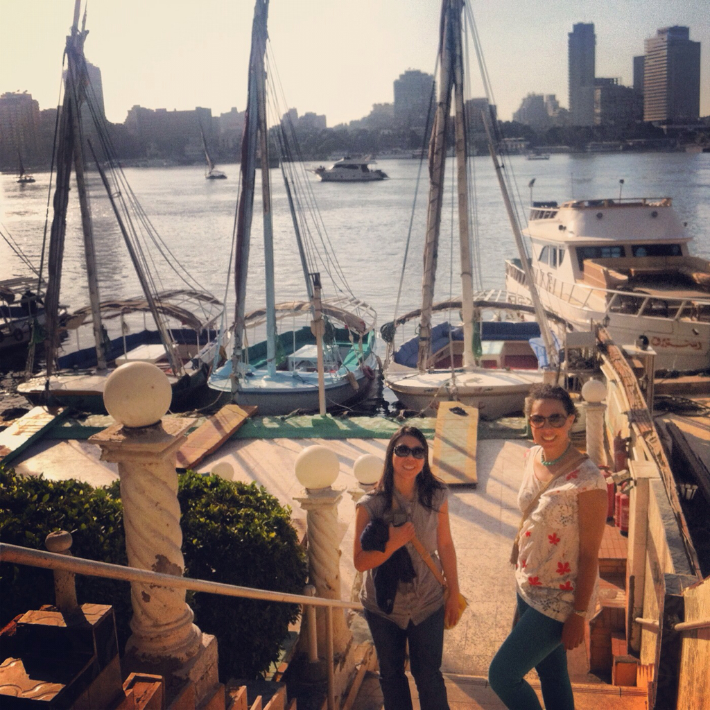

Cairo
There Goes the Fear
Let me let you in on a little secret. I was scared to death to come here yesterday. With one phone call to Debs, I was crying like I was going into battle, ne're to return again. I was scared I actually would be kidnapped, it would turn out to be a horrible idea, and life would potentially be over. And I'm not kidding. I fully believe they hate Americans here. Frankly, I've had the thought in the back of my mind for the last four and a half weeks.
And then I talked to Mom and she reminded me (even if she didn't believe it herself) how everything would be fine, our God is bigger than our fears, and I'd be home sooner than I even thought. Oh yeah! I'm homesick, too.
But as I said in my Facebook update prior to leaving, being brave is about being bigger than our fears and finding out for ourselves whether or not we validate or eradicate them. Today, when I got off that plane and couldn't find an ATM that would give me cash (which I needed to get a visa and therefore gain access into the country), my fears were supplemented by the possibility only certain Egyptians hate us... and they weren't at the Cairo airport.
I was personally escorted through immigration to find an ATM to get money and pay for my visa, I was happily granted access into the country, and my driver was a wonderful and conversational man who assuaged any thoughts I had that I should be nervous regarding my whereabouts. These were some lovely people... and men at that! Emad was happy to take me through Tahrir Square to show me where the revolution took place, drive me past where the former President lived, and let me know my hotel is both historic and in the safest place in town.
I got to the Marriott over here with my city and pool views and headed down to breakfast (after traveling for 22 hours, I still arrived just after 8 AM) and met a lovely young mother and daughter team. Asia is my age and a PhD candidate from... UC Irvine! And Hamida, her mother, is here traveling with her while Asia gains research for her dissertation. We just sat and chatted for four hours together about everything happening in Egypt today. All I know is that I'm sad we'll only have a day here, but it's the best decision because they are targeting Americans full stop! We'll be ok but I'm glad we won't be going out of the city or traveling at night... that's where and when they'll get'cha. Or if you work for an NGO as they are currently being accused of espionage. Great!
I excused myself and went up to get settled and freshen up after a long flight... again, no brushing of the teeth for a day. Now, time to meet up with Sheryl and grab some dinner. I can't wait to see her! Our adventure begins now and this is going to be one heck of a conclusion to one heck of a trip. Stay tuned...
Or so she thought...
Yeah, so, the night didn't end quite as we had planned it.
Sheryl arrived as scheduled and I met her with a warm embrace welcome down in our former palace lobby. She was here!! (please note the first use if the double exclamation point.) We went upstairs so she could settle in to our space before we had some Egyptian dinner. It turns out there was a lovely spot down in the pool area with a traditional dish and a shisha bar I had located on an earlier self-guided tour around the grounds. It would be the perfect thing to welcome us both to Cairo!
Before heading down, however, she wanted to check out the Premier Lounge (yeah, that's right) to check her email. Prior to her coming, that's where I was posted with Asia and Hamida for the better part of the morning and afternoon. After we alerted family members we were indeed still alive and now together, we were preparing to head down for our glorious night in but out (our hotel was like a resort!) when Asia walked in. She mentioned they had been looking for me just as I had been trying to find them; and now here we all were!
Since dinner was being served in the lounge, we decided to stay there and enjoy it together with an Egyptian friend of the ladies, Hend. We chatted the evening away but both Sheryl and I were feeling the effects of jet lag, coming from opposite ends of the world. Well, too bad for us! Hamida and Asia convinced us we absolutely had to see the night market and this historic mosque they frequented almost nightly. We were game to do it since we were only there for two days and this would be our only night in the city.
Oh my goodness. Good gracious. Holy horror! We were in for what would turn out to be the oddest and most uncomfortable part of (at least) my trip thus far. Our taxi ride over was most hilarious being Hamida still is a New Yorker at heart and was exclaiming at every end about our taxi driver's moves and the state of the city since "The Revolution". The parking on the side of the street would never be allowed if the police were still around (they were, interestingly enough, thoroughly absent) and it was pure "insanity!". She was, beyond belief, HI-larious.
Once we arrived, though, it seemed the mosque wasn't necessarily a "world wonder" as she has previously alleged but was just a special place to them personally. We took off our shoes (which only minorly grossed me out as I was wearing nary a sock) and headed into the prayer room. We came in upon a 800 square foot room with Muhammad's grandson's remains and consequently got to meet their friends from Sudan and the director of said mosque. Though it was quite interesting for the first few minutes, I didn't want to touch the banisters nor pray in front of a cage and I sure as heck didn't want to... Oh gosh... have to say... "Thank you for this head scarf!" THEN, somehow, some way, she talked whomever into letting us "pray" (read: take pictures) in the men's area.
Good Lord. I was already completely uncomfortable in a building I didn't want to be in and now I was wrapped in some old man's scarf, pushing men out of their prayer stations so we could get a better shot with the silver door. How awkward can it get?! Please. Tell me now. I was ready to be beaten in posterity for my lack of respect in this most important holy place and these ladies had me photoshooting them by the casket.
The taxi ride home was just as raucous as the first and thankfully it was over quickly with not much traffic standing between that mosque and my bed. Though they wanted to end the night with tea, Sheryl and I had had our fill of the night's adventure and headed directly to bed with a quick hug of each and an exchange of phone numbers.
All I can say is that we had a lot to be wide-eyed about as we scurried to the elevator and consequently to our room. Truth be told? I hope our trip includes amazing experiences such as this one to keep us on our toes and out of our comfort zones. Here's to hoping the best to that mother and daughter team...
Walk like an Egyptian
Today we saw the PYRAMIDS! Amidst nervousness and the looming decision of whether or not to travel to the country, Sheryl and I decided there was no way - come hell or high water - we were going to miss this World Wonder. I mean, it's the "Wonder of Wonders", the only remnant of the original seven! (Though I did see that one column from the Temple of Artemis in Ephesus...)
Dating back to around 2560 BC (that's over 4,000 years ago, People!), the Great Pyramid of Giza was the tallest man-made structure in the world for 3,800 years. Let me tell you something. When you see these three bad boys looming off in the distance, behind the modern-day apartment buildings of Cairo and Giza, it takes your breath away. They are magnificent, majestic... and huge.
We were blessed with cloudless skies, 70 degree weather, and an impressive lack of haze (Cairo is a very pollution-dense city) for our visit. We met up with our lovely guide, Sahar, or "Mama" as she enjoyed us calling her, at the hotel at nine in the AM and were immediately whisked off to our adventurous whirlwind tour of her beloved city. She told us of the history of Cairo, along with that of the pyramids, while we zipped in between cars and lanes on our hour long drive. Egypt, as I'm sure you are well aware, has a long history as one of the oldest civilizations in the world and there is a great deal to learn... she did her best with the time she had.
Once on the site, she immediately confiscated our cameras so should could take our photos whereever we wanted; she was our own tour guide and shot taker! We climbed up and around, hearing the tales of pharoahs and lives gone by; she told us where, 4,000 years ago, the pyramids needed to sit in accordance with Egyptian belief in the hereafter. They believed, as this life is short, the afterlife was more important than the current one and therefore they prepared wholeheartedly for it. The pyramids, as the tombs of the pharoahs, were to be chambers housing everything keeping the great rulers company and safe during their journey throughout the great beyond.
We couldn't wait until we finished examining the third and final structure (on this site... there are about 20 in the surrounding area) so we could do our long-anticipated camel ride! Let me first say, this would totally be a PETA-safe event. These guys were just chillin', eating their hay grass stuff, and laying out. Thankfully the tourism police monitor their safety and care, or so it seemed. Anyway, what a blast! I hate the mounting, descent, and ascent of these great beasts (as I found out last year in Dubai) but the ride was glorious! Hello... riding a camel with one of the ckpy, in the Egyptian desert, by the PYRAMIDS?! Yeah, that happened. (squeal!)
After we finished and we took a picture with our little camelwalker, we were off to catch glimpse of the Sphinx. She was much smaller than I had imagined her to be and I found it interesting she was sort of an afterthought of the builders of the surrounding formations. Actually, the stone used to carve her wasn't fit to use as blocks for the pyramids so they carved a lioness-type thing into the stone. I'm sure there is more to it but I sure do forget it now... We had a photo shoot and I received my first marriage proposal there. Zing! At least it wasn't on the jumbo-tron... because my answer was a resounding no. But thank you for your interest.
By this time we were famished and so off we went to lunch at The Temple Flower Essence, a local perfumery. You know the story, just like in China and every other country that has a tourism industry (do we do this?), we had to get sold on one of Egypt's more prized exports: essence oils. This one had a good angle with a Bedouin man (who spoke seven languages! that he couldn't name...) in traditional dress who told us all about the various fragrances in his shop. It was beautiful! The jars, small and large, that were to hold the oils were both intricate and delicate and Sheryl and I had to pick up a couple. The perfumes themselves were a little to pricey for my taste.
He and his team served us lunch and let us look around - where we saw pictures of him, Adel, in traditional 70s dress with ciggies in his mouth... quite curious - for a short while before we departed. Surprisingly enough, that meal of pasta and Egyptian spices would satisfy us throughout the day... but we forgot to get the promised recipe from Sahar! Dang. I'm going to email her.
Following our outdoor adventure, it was time to head to Tahrir Square to the Egyptian Museum. Thankfully the important highlights that we saw were unscathed from the unrest of last year and so we were on our way to see more history at this beautiful place. She marched us right to King Tut's area - a young pharoah who died by 20 and who, for all intents and purposes, would have long been forgotten if it weren't for the fact that the Egyptians forgot about him.
So, it turns out that King Tut was inconsequential since he ruled for such a short period of time, unlike Ramses, and so they actually put two tombs on top of his after he was burried. As all of the tombs of the pharoahs have been looted over time, it took one English archealogist to unearth this grandiose underground cave and masterpiece. Everything was exactly as it was when the young ruler died - even though it seemed thrown into place like an old garage - including his body and burial mask. Today, he is a celebrated ruler because he and the contents of his tomb are the only tangible remnants the Egyptians have of the time of the pharoahs.
It was too bad we couldn't take pictures in there because they came up with so many wonderful things! They created the sandal, the hammock, the folding chair... yeah, they were a genius society to be sure. I mean, the engineering of the pyramids is great but sandals!? Marc Jacobs should take note... they had some great style back then!
Jet lag was once again creeping in on Sheryl and I and so our Faluca (sail boat) ride on the Nile couldn't come at a better time. After a brief detour to see the camps within Tahrir, and take a few pictures with the protestors there, we were off to catch our floating ride before the sun waned off to sleep for the night. The weather was perfect, with a slight breeze to keep us cool, and the company delightful. Sahar put on some Arabic music to accompany the setting and we simply enjoyed the sights and sounds of the grand River Nile, whose history seems neverending. I can only imagine the things it's heard and seen, I mean, that is where Moses was found by his adoptive princess-mother! This is the river that was turned to blood during the plagues! Such beauty, it knew no bounds...
We quietly disembarked our vessel with a thank you to our captain and headed back to the night market to close our time together. We scurried with Mama to her favorite schwerma roadside shop and meandered through the almost desolate streets with our dinner. The effects of The Revolution are felt in the defeaning silence as tourists are too fearful to come to the city. We wanted so badly to shop and support the local economy but we were too tired to bargain and look for small trinkets for friends. We left with a promise to tell our friends and family about the safety of the country and to encourage them to come and support Egypt. So do it!
Night was falling and it was time for us to go our separate ways. Emad picked us up with his gracious and full smile from our trusty tour guide at a local hotel and we said our somber goodbyes. We would miss Sahar to be sure but we promised to be back one day, with more friends and family, and she insisted then that we would stay in her home. We zipped through the streets and ended up at the airport with a few hours to spare and so we hunkered down in the Egypt Air lounge, ready and waiting for our next adventure in Jordan. The Dead Sea was tomorrow! We didn't have plans yet but figured it would all fall into place. For now? We needed to prepare for sleep so we could be ready for everything tomorrow had in store...
"Take it back!"
"If I wanted something your thumb touched I'd eat the inside of your ear!"
Please. It's been five weeks and not even one single Arrested Development quote. You're getting off lucky. But you should watch this episode where Lucille yells at a pool boy... I digress. (season two)
Today we spent the day touring the city and surrounding areas with Sahar, our most wonderful and knowledgeable tour guide. She was such a lovely example of who the Egyptian people are and the hospitality that they showed us in our short time in their country.
So here, after this short paragraph, is where I must apologize. I take back what I said previously about Americans being hated in Egypt. Yes, there are some that do but there are most that don't. We have an overarching fear in America that the angst and outcry of the Egyptian people is to prove their case against the American people. That, for some reason, their battle is somehow related to us and that we are their target.
Absolutely not. And I repeat for all of you who don't believe me but are sitting happily in your home or at your office in America (not, as it were, in Egypt): absolutely not. Yes, we see weekly (I hope it's not nightly because there are horrible things that are ACTually happening around this world...) how the birthing pains of The Revolution, as it's called here, are impacting the country and what that means for and to Americans. Let's be clear here: The Revolution is a fight for the freedom of Egypt. It is a civil upset where a small group of people decided that enough was enough in relation to injustice and oppression. They stood up. They shouted out. Many were killed - not in the name of Allah or hate but in the name of freedom, personal and internal freedom.
We all want to be a part of history, a part of something that matters, a part of something great. At times, it's my feeling, our longing to feel important or as an agent for change propels us into acts that, in the larger scheme, do not avail our cause but harm it. Such is our innate desire to create a name for ourselves. The Revolution is not a war between the West and the Middle East. This is a war between an oppressed people and their government. It is an exemplary situation where, without asking for aid or support, the few amassed the many and birthed a new generation of young people prepared to fight readily for justice.
Is it not what we fought for in 1775? We must not forget that armed with muskets and barrel rifles (maybe?) we stood against the English and said "no more". We wanted our independence. This led to what is now the greatest nation in the known world today. We are great because of those who came before and those who, daily, give their lives for our freedom. For hope. For justice. For peace. Lives are lost. It gets pretty messy. It takes years to rebuild. But the war is not against us, it is because of us. It is because we are great, because we exemplify success and the "idea of something better" that these brave souls had the courage to oust a president, destroy a parliament building, and demand democracy.
I know that there are some offshoot groups that kidnapped Americans and some chicks from Asia. To overlook the tenous nature of the situation and not own that we are in a bit of danger would be irresponsible and utterly naive... dare I say stupid. But they thought they would get their own hostages out if they took some of our people. Freaking scary. I get it. I am not downplaying it or shirking it. I am aware. (Mother and Matt: I am aware) One combats fear with what is known. We all react differently and our minds connect things on all different levels. No, it's not the same level, but I hope you can understand my analogy. Just as Americans do some pretty pretty prettttay stupid stuff, other cultures do the same - and on more extreme levels! It's my belief that in this one situation, they didn't know what else to do except what they have seen modeled before. We need to be aware but we need to understand.
All to say, I insisted we go into Tahrir Square upon the conclusion of our day in Cairo (more on that below). I wanted these people - of all ages - to know that we support them, that we stand behind them; that the cause of freedom didn't end over 200 years ago; that together we stand, divided we will surely fall. I wanted to show posterity that Americans aren't scared to walk alongside of them. I wish you could've seen their faces, bright and shining, when they saw us walking through their memorials and their ground zero... when they saw that they weren't alone when they thought that undoubtably they were. There goes the fear...
And now? I pray they will succeed. I pray that no more will die in vain. I pray that God will bless them as He continues to bless the United States of America.